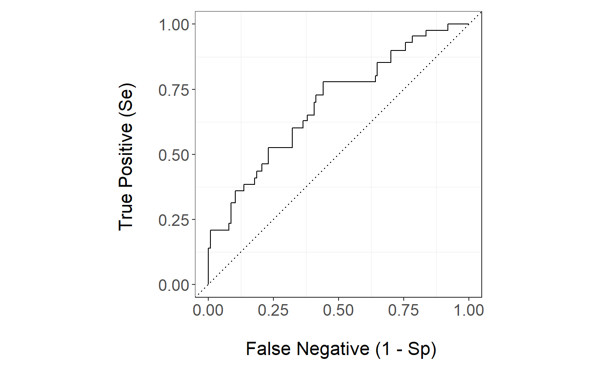
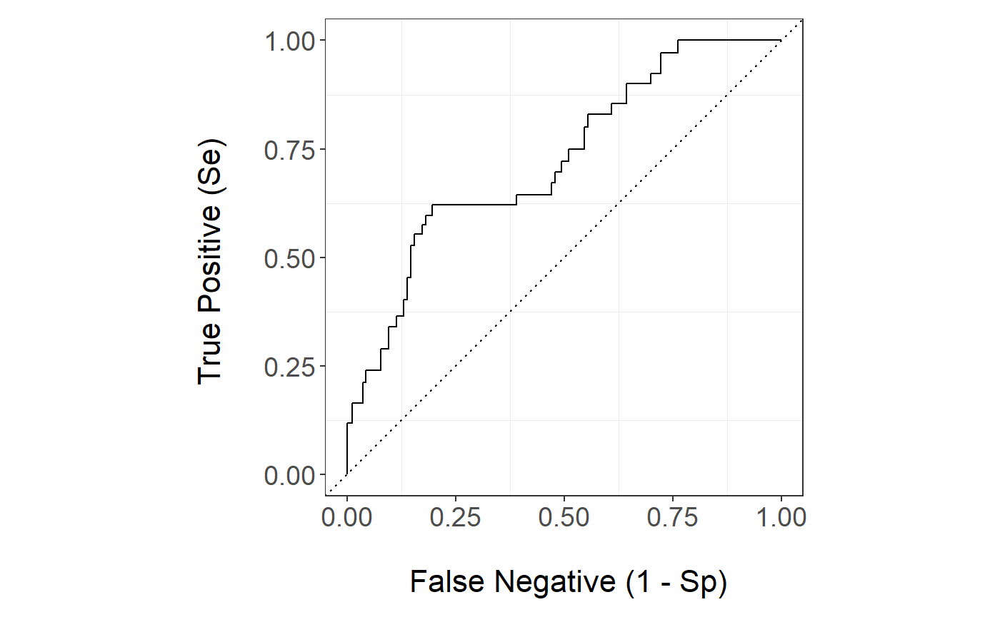

Introduction to stackBagg package
Introduction.RmdIntroduction
This vignette focuses on giving an overview of the main functions of the package. This vignette uses the simulated data which ships with the package.
Example: Simulated Data
The simulated data can be loaded via:
library(stackBagg)
#> Loading required package: Matrix
#> Loading required package: gam
#> Loading required package: splines
#> Loading required package: foreach
#> Loaded gam 1.16.1
data("exampleData")exampleData is a list with three elements. The first elemenent contains the training data set and the second element contains the test data set. The data set train and test consist of the variables id, the binary outcome E, the event times denoted as ttilde, delta as the event indicator at ttilde (censored observations are denoted by the value 0), the trueT which denotes the binary outcome under no censoring and lastly 20 covariates:
train <- exampleData[[1]][[1]]
head(train)
#> id E ttilde delta trueT X1 X2 X3
#> 423 423 0 52.300159 1 FALSE 0.08281419 0.172352230 0.06647657
#> 780 780 1 7.949695 1 TRUE 0.16976528 -0.081576673 -0.10240238
#> 250 250 0 34.372640 1 FALSE 0.09636968 0.052661443 0.12062371
#> 646 646 <NA> 8.767113 0 FALSE -0.15564309 -0.061024800 -0.01785616
#> 411 411 0 36.957775 1 FALSE -0.07297439 0.004880959 -0.13187802
#> 273 273 <NA> 10.331866 0 FALSE 0.09327623 -0.163935475 -0.05678734
#> X4 X5 X6 X7 X8
#> 423 0.010862900 -0.060631525 -0.08074032 0.16873440 0.04340777
#> 780 -0.063301947 -0.189945655 -0.24955745 -0.05273801 0.01022313
#> 250 0.002720333 -0.121034800 -0.15937346 0.12669938 0.13122538
#> 646 0.080797624 0.007448868 -0.04943161 0.06093838 -0.23895869
#> 411 -0.046518184 0.003982125 -0.04968490 -0.09684055 0.06668652
#> 273 -0.106773616 -0.053778966 -0.36543560 0.04241530 -0.04468489
#> X9 X10 X11 X12 X13 X14
#> 423 -0.006117758 -0.12283608 -0.64504704 0.3258370 -0.2671135 0.8266186
#> 780 -0.070563657 -0.08396796 -0.18397728 0.6004917 -0.4475623 -0.3590347
#> 250 0.029273293 0.01372634 -0.38093408 -0.9907098 0.2355303 0.8957453
#> 646 -0.113911314 -0.13912994 -0.69319058 -1.3872817 1.0595717 -0.1584360
#> 411 -0.071835283 -0.10135100 -0.02037296 -0.3527412 -0.4043686 -0.6587839
#> 273 -0.071334425 -0.05086768 -0.67349006 -0.3978803 0.3390769 0.2385083
#> X15 X16 X17 X18 X19 X20
#> 423 -0.2348479 0.9260907 0.5582131 0.1672586 0.05897599 0.4196418
#> 780 0.9044775 0.0510946 -0.3397124 0.8655912 0.58665758 -1.0098241
#> 250 0.3558889 1.3780777 0.1241028 -0.4286867 0.10661455 -0.4749545
#> 646 -0.7281273 0.6509288 -0.5915999 -0.2572964 -0.81711210 0.5843599
#> 411 0.5088058 -0.5017764 -0.6649954 0.2478391 0.03220401 0.7999203
#> 273 -0.1007935 0.1772234 0.9978399 0.7961343 -0.08876092 0.4818328test <- exampleData[[2]][[1]]
head(test)
#> id E ttilde delta trueT X1 X2 X3
#> 2 2 0 64.494547 1 FALSE 0.19653678 -0.06612803 -0.17318574
#> 7 7 0 64.323597 2 FALSE 0.07215234 0.02897143 0.08957245
#> 32 32 1 20.115272 1 TRUE 0.10124635 -0.13058958 0.08660183
#> 50 50 <NA> 9.417668 0 TRUE -0.05097176 -0.06717374 0.18942554
#> 62 62 <NA> 12.124566 0 FALSE -0.11860139 -0.03328412 0.01552746
#> 65 65 0 20.023369 2 FALSE 0.21348415 -0.02690853 -0.02702318
#> X4 X5 X6 X7 X8
#> 2 0.08928017 0.02733158 -0.06803704 -0.06582461 -0.03348928
#> 7 0.05467074 -0.05344298 -0.07477942 0.08642445 -0.05110457
#> 32 0.01934914 -0.13447104 -0.00592559 0.02323055 0.03760170
#> 50 -0.15595468 0.18782818 -0.11684748 -0.07174367 0.10368502
#> 62 -0.03566977 0.17223400 0.11178515 -0.07117080 0.10993110
#> 65 0.05891138 0.08819088 0.02286303 0.07790421 0.13443462
#> X9 X10 X11 X12 X13
#> 2 -0.0817359311 0.03067802 0.53518872 0.04725869 0.69187769
#> 7 -0.0635635495 -0.02555120 0.45535370 0.24984347 0.08591775
#> 32 -0.0156705988 0.09414932 -0.77074516 -0.05461036 0.18559911
#> 50 -0.0001588212 0.03087372 0.09910245 0.08448019 0.06461913
#> 62 0.2151523951 -0.03255328 0.75207670 0.66549092 0.46742318
#> 65 0.1478304786 0.01003466 -0.01380349 -1.25888263 -0.49010812
#> X14 X15 X16 X17 X18 X19
#> 2 -0.1857249 0.4538783 0.0308172015 -0.7309331 0.3560292 -0.27862282
#> 7 0.5821856 -0.3025899 -0.9635968963 1.4319108 -0.1644014 1.37290745
#> 32 -0.4332053 0.9523075 0.3172001109 -1.0319663 1.0912307 -0.09370163
#> 50 -1.2068642 -0.7959719 -0.2613358633 -0.4844889 -0.5355841 0.01226348
#> 62 -1.2911703 -0.2458894 0.0004135976 -0.7451024 -0.6173149 -0.43773691
#> 65 0.2247324 0.3529755 0.3388744213 -0.2660526 -0.2320293 -0.18283466
#> X20
#> 2 -0.63319481
#> 7 0.02371843
#> 32 -0.57132685
#> 50 -0.55612238
#> 62 -0.10535540
#> 65 -1.30989032There is a third element exampleData which is the true AUC for the simulated data on the cumulative incidence of the main event at time 26.5 computed analytically under the Weibull distribution using the scale and shape parameter for both event times.
The train data set consists in 800 individuals where 167 are censored and 180 experience the event of interest at time 26.5:
and 51 subjects experience the competing event within the time of interest 26.5. These individuals are part of the control group.
library(dplyr)
#>
#> Attaching package: 'dplyr'
#> The following objects are masked from 'package:stats':
#>
#> filter, lag
#> The following objects are masked from 'package:base':
#>
#> intersect, setdiff, setequal, union
train %>% subset(E==0 & ttilde<26.5) %>% count(delta)
#> # A tibble: 1 x 2
#> delta n
#> <dbl> <int>
#> 1 2 51The test data set consists in 200 individuals where 45 are censored and 39 experience the event of interest:
and there are 24 subjects that experience the competing event within the time of interest 26.5:
library(dplyr)
test %>% subset(E==0 & ttilde<26.5) %>% count(delta)
#> # A tibble: 1 x 2
#> delta n
#> <dbl> <int>
#> 1 2 24Next we apply stackBagg to estimate the risk of experiencing the main event using the 20 covariates in the data set. In other words, using stackBagg we are going to estimate \(P(T<26.5,\delta=1|X)\) using a bunch of machine learning algorithms. Before applying stackBagg, we need to make sure that the data set is in the appropiate format: time event is in the first column and the second column is the indicator event type.
Note: The first two columns of the data.frame data set must be in the following order: time and then status/event indicator. The function stackBagg::stackBagg creates for us the binary variable of interest E in terms of the time point of interest and the status/event indicator.
train <- train[,-(1:2)]
head(train,2)
#> ttilde delta trueT X1 X2 X3 X4
#> 423 52.300159 1 FALSE 0.08281419 0.17235223 0.06647657 0.01086290
#> 780 7.949695 1 TRUE 0.16976528 -0.08157667 -0.10240238 -0.06330195
#> X5 X6 X7 X8 X9
#> 423 -0.06063153 -0.08074032 0.16873440 0.04340777 -0.006117758
#> 780 -0.18994565 -0.24955745 -0.05273801 0.01022313 -0.070563657
#> X10 X11 X12 X13 X14 X15
#> 423 -0.12283608 -0.6450470 0.3258370 -0.2671135 0.8266186 -0.2348479
#> 780 -0.08396796 -0.1839773 0.6004917 -0.4475623 -0.3590347 0.9044775
#> X16 X17 X18 X19 X20
#> 423 0.9260907 0.5582131 0.1672586 0.05897599 0.4196418
#> 780 0.0510946 -0.3397124 0.8655912 0.58665758 -1.0098241
test <- test[,-(1:2)]
head(test,2)
#> ttilde delta trueT X1 X2 X3 X4
#> 2 64.49455 1 FALSE 0.19653678 -0.06612803 -0.17318574 0.08928017
#> 7 64.32360 2 FALSE 0.07215234 0.02897143 0.08957245 0.05467074
#> X5 X6 X7 X8 X9 X10
#> 2 0.02733158 -0.06803704 -0.06582461 -0.03348928 -0.08173593 0.03067802
#> 7 -0.05344298 -0.07477942 0.08642445 -0.05110457 -0.06356355 -0.02555120
#> X11 X12 X13 X14 X15 X16
#> 2 0.5351887 0.04725869 0.69187769 -0.1857249 0.4538783 0.0308172
#> 7 0.4553537 0.24984347 0.08591775 0.5821856 -0.3025899 -0.9635969
#> X17 X18 X19 X20
#> 2 -0.7309331 0.3560292 -0.2786228 -0.63319481
#> 7 1.4319108 -0.1644014 1.3729075 0.02371843Another argument of the function stackBagg::stackBagg is the names of covariates as they are named in the data set that we want to include in the model. As we have said above, we are going to use all covariates
xnam <- names(train)[-(1:3)]
xnam
#> [1] "X1" "X2" "X3" "X4" "X5" "X6" "X7" "X8" "X9" "X10" "X11"
#> [12] "X12" "X13" "X14" "X15" "X16" "X17" "X18" "X19" "X20"We have also to specify the library of algorithms that we want to use to predict the event of interest and to be used to form the stack. We could see all the algorithms that the user could potentially include in the analysis through stackBagg::all.algorithms(). Let ’s use all of them and we denote it as ens.library.
ens.library <-stackBagg::algorithms()
ens.library
#> [1] "ens.glm" "ens.gam" "ens.lasso"
#> [4] "ens.randomForest" "ens.svm" "ens.bartMachine"
#> [7] "ens.knn" "ens.nn"Another argument of the function stackBagg::stackBagg is a list of tune parameters for each machine learning procedure. If this argument is missing, the function uses as default values the same used for the simulation in the paper. For now, we are going to use the default values for the tune parameters. Additionally, we will use 5 folds and we are going to show the results computing the weights under a Cox proportional hazard model (CoxPH) and boosting Cox regression (Cox-Boost).
Firstly, we model the weights under CoxPH and we train the different models and get their predictions on the test data set.
pred <- stackBagg::stackBagg(train.data = train,test.data = test,xnam = xnam,tao = 26.5,weighting = "CoxPH",folds = 5,ens.library = ens.library )
#>
|
| | 0%
|
|:):):):):):) | 20%
|
|:):):):):):):):):):):):):) | 40%
|
|:):):):):):):):):):):):):):):):):):):) | 60%
|
|:):):):):):):):):):):):):):):):):):):):):):):):):):) | 80%
|
|:):):):):):):):):):):):):):):):):):):):):):):):):):):):):):):):)| 100%We show several output of pred.
Predictions and performance of IPCW Bagging
Let s take a look first at the IPCW Bagging prediction of the different algorithms and the stacked IPCW Bagging on the test data set:
head(pred$prediction_ensBagg,5)
#> ens.glm ens.gam.3 ens.gam.4 ens.lasso ens.randomForest ens.svm
#> [1,] 0.1814794 0.15476923 0.10809057 0.2265396 0.1423358 0.1853003
#> [2,] 0.2340632 0.29552381 0.09581175 0.2693806 0.1718961 0.2332559
#> [3,] 0.2347118 0.24872934 0.13310258 0.2539593 0.2002636 0.2579095
#> [4,] 0.3943893 0.32217094 0.81271854 0.3019794 0.6466103 0.4197263
#> [5,] 0.1155745 0.09523077 0.07718791 0.2516683 0.1383948 0.2236012
#> ens.bartMachine ens.knn ens.nn Stack
#> [1,] 0.03784839 0.02910238 0.0737349 0.06649954
#> [2,] 0.14667615 0.13447557 0.2276174 0.16000481
#> [3,] 0.13430415 0.14003613 0.2053381 0.16146656
#> [4,] 0.81662539 0.83985393 0.4425848 0.74120257
#> [5,] 0.02669131 0.02023671 0.1310171 0.06218196The assessment of predictive performance using the IPCW AUC is:
pred$auc_ipcwBagg
#> ens.glm ens.gam.3 ens.gam.4 ens.lasso ens.randomForest ens.svm
#> [1,] 0.6446224 0.5596546 0.6961702 0.5889355 0.6654154 0.6109251
#> ens.bartMachine ens.knn ens.nn Stack
#> [1,] 0.6984802 0.7239686 0.6031828 0.7120327The optimal coefficients used to get the stacked IPCW Bagging:
pred$optimal_coefficients
#> [1] 0.023195012 0.010188628 0.004484522 0.006795781 0.054328143 0.134030288
#> [7] 0.391061609 0.367420097 0.008495920We can note that the algorithms with the largest predictive performance weigh in more in the stack. We check if convergence has been reached in the optimization problem of finding the optimal coefficients (0 denotes convergence, 1 otherwise) and the penalization term used:
We can check the tune parameters used to train the algorithms:
pred$tuneparams
#> $gam_param
#> [1] 3 4
#>
#> $lasso_param
#> [1] 0.03103655
#>
#> $randomforest_param
#> [1] 500 4
#>
#> $knn_param
#> [1] 25
#>
#> $svm_param
#> [1] 0.01 NA 2.00
#>
#> $nn_param
#> [1] 1
#>
#> $bart_param
#> [1] 50.0 1.0 0.9The GAM is trained with two degree of freedom 3 and 4. The LASSO paremeter refers to the lambda penalization term. The parameters in the random forest refer to the number of trees (num_tree=500) and the umber of variables randomly sampled as candidates at each split (mtry=4). k chosen in the k-NN is 25. The SVM parameters are the cost, gamma and kernel (radial=1 and linear=2). Since the kernel is linear the gamma is NA since the linear kernel does not use the gamma parameter. The neurons is set to 1 in the neural network. The last values are the parameter number of trees, k that determines the prior probability that the average of the outcome falls into (-3,3) and q the quantile of the prior on the error variance.
ROC curve
Let s compare the ROC curve for the best and worst single algorithm and the stack. The ROC curve of the stack is
stackBagg::plot_roc(time=test$ttilde,delta = test$delta,marker =pred$prediction_ensBagg[,"Stack"],wts=pred$wts_test,tao=26.5,method = "ipcw")The GAM.4 ROC curve is
stackBagg::plot_roc(time=test$ttilde,delta = test$delta,marker =pred$prediction_ensBagg[,"ens.gam.4"],wts=pred$wts_test,tao=26.5,method = "ipcw")
The k-NN ROC curve is
stackBagg::plot_roc(time=test$ttilde,delta = test$delta,marker =pred$prediction_ensBagg[,"ens.knn"],wts=pred$wts_test,tao=26.5,method = "ipcw")
Native Weights
Now let s take a look at prediction of the algorithms that allows for weights natively:
head(pred$prediction_native_weights,5)
#> ens.glm ens.gam.3 ens.gam.4 ens.lasso ens.randomForest
#> 1 0.09159603 0.1930659 0.06515164 0.06515164 0.06515164
#> 2 0.18935317 0.2242292 0.25510227 0.25510227 0.25510227
#> 3 0.19175635 0.2660080 0.20201615 0.20201615 0.20201615
#> 4 0.65912540 0.4278236 0.43986199 0.43986199 0.43986199
#> 5 0.12340476 0.2280105 0.12499985 0.12499985 0.12499985and their performance is:
Survival Methods
Moreover, let s see the prediction of three survival based methods: a cause-specific Cox proportional hazard regression model, Cox-Boost and survival random forests for competing risk.
Naive Methods
Lastly, we could see the performance of the algorithms if we were to discard the censored observations
pred.discard <- stackBagg::prediction_discard(train.data = train,test.data = test,xnam = xnam,tao = 26.5,ens.library=ens.library)
#> Warning in model.matrix.default(mt, mf, contrasts): non-list contrasts
#> argument ignored
#> Warning in model.matrix.default(mt, mf, contrasts): non-list contrasts
#> argument ignored
head(pred.discard$prediction_discard)
#> ens.glm ens.gam.3 ens.gam.4 ens.lasso ens.randomForest ens.svm
#> 1 0.2126177 0.20 0.03243026 0.2843142 0.1043468 0.1807519
#> 2 0.2126177 0.32 0.04879998 0.2845082 0.1502397 0.2268412
#> 3 0.2126177 0.28 0.18117311 0.2847300 0.2152429 0.2899380
#> 6 0.2126177 0.48 0.22768721 0.2844635 0.2419865 0.2146694
#> 7 0.2126589 0.40 0.29281663 0.2849603 0.4264095 0.4152594
#> 8 0.2126177 0.32 0.39038433 0.2845404 0.2698286 0.2541831
#> ens.bartMachine ens.knn ens.nn
#> 1 0.02691724 0.02050142 0.06454572
#> 2 0.16964078 0.14835985 0.25879185
#> 3 0.14755887 0.15837638 0.22572062
#> 6 0.11574933 0.14557574 0.10215265
#> 7 0.62192293 0.60810967 0.56224708
#> 8 0.27447448 0.21984137 0.23713833
pred.discard$auc_discard
#> ens.glm ens.gam.3 ens.gam.4 ens.lasso
#> 0.6011273 0.5870911 0.7146331 0.6268789
#> ens.randomForest ens.svm ens.bartMachine ens.knn
#> 0.6945181 0.6372679 0.7270115 0.7458002
#> ens.nn
#> 0.6220159
stackBagg::plot_roc(time=test$ttilde,delta = test$delta,marker =pred.discard$prediction_discard[,"ens.gam.4"],tao=26.5,method = "discard")
#> NULL